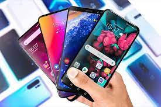

e3 Điện thoại là thiết bị viễn thông dùng để trao đổi thông tin, thông dụng nhất là truyền giọng nói - tức là "thoại" (nói), từ xa giữa hai hay nhiều người. Điện thoại biến tiếng nói thành tín hiệu điện và truyền trong mạng điện thoại phức tạp thông qua kết nối để đến người sử dụng khác. Hệ thống thực hiện công năng như vậy có hai hợp phần cơ bản: Thiết bị đầu cuối, thường gọi bằng chính tên "điện thoại", thực hiện biến tiếng nói thành tín hiệu điện để truyền đi, và biến tín hiệu điện nhận được thành âm thanh. Mạng điện thoại điều khiển kết nối và truyền dẫn, thực hiện nối những người dùng liên quan với nhau và truyền dẫn tín hiệu. Sự phát triển của kỹ thuật dẫn đến ngày nay mạng điện thoại có nhiều công năng hơn, như truyền fax, internet,... và bên cạnh đôi dây nối truyền thống thì có những cách thức phương tiện truyền dẫn mới.
Cho đến gần đây, từ "điện thoại" chỉ dùng để nói tới điện thoại có dây. Điện thoại mẹ con và điện thoại di động hiện nay khá phổ biến ở nhiều nơi, với điện thoại di động có triển vọng thay thế điện thoại có dây. Không như điện thoại di động, điện thoại mẹ con cũng phụ thuộc điện thoại có dây vì nó chỉ có ích trong một khoảng cách nhỏ chung quanh trạm phát được kết nối với dây điện thoại.